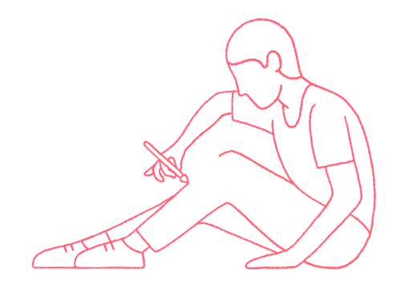

Many of Lufthansa Technik’s 4,500 employees were stuck in endless meetings. With 9 Spaces, they began building a more effective meeting culture.
Explore six non-awkward formats, methodsand exercises that help bring teams closer together.

This tool helps you reflect on your life and share your experiences in order to strengthen the relationships within your team.